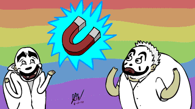
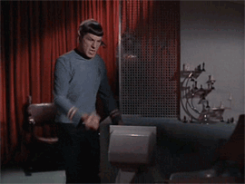
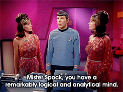

Just Listen
a book by Mark Gouldston
Presented by @derekhoman
3 Part Brain
For Brevity
Reptillian (Amygdala)
instinctive Fight or Flight that kicks in when a crisis looms
Limbic (Mammal Layer)
Emotions, positive and negative
Primate Level (Neocortex)
Logic and Rational (think Spock)

Why is this important?
Even Spock gets mad
Amygdala Hijack
Important to know how to reverse full reptile brain
To Maximize Spock time
Reptile mode to spock mode
Instead of trying to use logic
We need to "connect" to them
You know Empathy
Scientists found certain cells fire in monkey brains when threw a ball or ate a banana in the prefrontal cortices
Scientists also found that those cells fire when the monkeys watched another monkey perform these acts
Why you cringe when you watch a fail gif or a coworker gets a papercut
Or cheer when the hero gets the girl in a movie